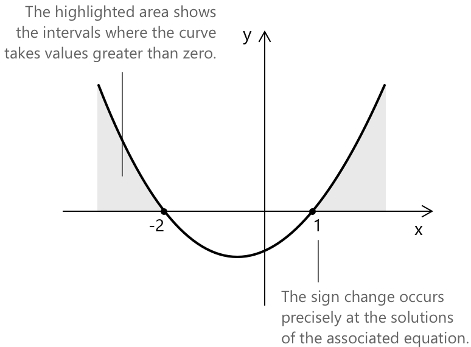

Метод інтервалів у нерівностях
Що таке аналіз знаків
Аналіз знаків нерівностей — це метод визначення проміжків, на яких заданий вираз є додатним, від'ємним або дорівнює нулю. Цей підхід особливо цінний для розв'язання поліноміальних та раціональних нерівностей, а також для аналізу поведінки функцій у визначених областях визначення.
Знак добутку визначається тим, чи є кількість від'ємних множників парною чи непарною. Добуток є додатним, якщо кількість від'ємних множників парна, і від'ємним, якщо кількість від'ємних множників непарна. Маємо:
\[ \begin{align} +\times + &\quad = + \\ +\times - &\quad = – \\ -\times - &\quad = + \\ -\times + &\quad = – \end{align} \]
Приклад 1
Розглянемо просту квадратичну нерівність:
\[ x^2 + x - 2 > 0 \]
Нам потрібно визначити область значень \(x\), що задовольняють нерівність. Спочатку ми можемо розкласти поліном на множники у вигляді:
\[(x - 1)(x + 2) > 0 \]
Згідно з правилом знаків добутку, цей поліном, розкладений на добуток двох множників, є додатним, коли виконується наступна умова:
\[ \begin{align} &x – 1 > 0 \to x > 1 \\[6pt] &x + 2 > 0 \to x > -2 \end{align} \]
Значення \(x = 1\) та \(x = -2\) поділяють дійсну пряму на розрізнені проміжки. Оскільки вираз є неперервним і може змінювати знак лише у своїх нулях, його знак залишається сталим на кожному проміжку. Ці значення потім відзначаються на числовій прямій, де \(+\) та \(-\) вказують знак на кожному проміжку.
| \[ -2 \] | \[1 \] | ||
|---|---|---|---|
| \( x - 1 > 0 \) | \( \boldsymbol{-} \) | \( \boldsymbol{-} \) | \( \boldsymbol{+} \) |
| \( x +2 > 0 \) | \( \boldsymbol{-} \) | \( \boldsymbol{+} \) | \( \boldsymbol{+} \) |
| \( (x - 1)(x+2) > 0 \) | \( \boldsymbol{+} \) | \( \boldsymbol{-} \) | \( \boldsymbol{+} \) |
В останньому рядку ми вписуємо результат добутку знаків між знаком з 1-го рядка та знаком з 2-го рядка для кожного проміжку. Проміжки, що задовольняють нашу початкову нерівність \( (x – 1)(x + 2) > 0 \), це:
\[x < -2 \quad \text{та} \quad x > 1 \]
У позначенні проміжками множина розв'язків така:
\((-\infty, -2) \cup (1, +\infty) \)
Якщо нерівність нестрога, нулі виразу належать до розв'язання. Для нерівності: \(x^2 + x – 2 \geq 0\) процедура ідентична, але оскільки нерівність задовольняється також при \(f(x) = 0\), нулі \(x = -2\) та \(x = 1\) включені до множини розв'язків \((-\infty, -2] \cup [1, +\infty)\).
Систематична процедура аналізу знаків
Загалом, аналіз знаків нерівностей здійснюється за систематичною процедурою, яка послідовно застосовується до будь-якого полінома або раціонального виразу.
- Перепишіть нерівність у вигляді \(f(x) > 0\) (або \(< 0\), \(\geq 0\), \(\leq 0\)), щоб правою частиною був нуль.
- Розкладіть \(f(x)\) на добуток або частку лінійних або незвідних множників. Для раціональних нерівностей аналізуйте чисельник і знаменник незалежно.
- Знайдіть нулі кожного множника. Нулі знаменника ніколи не належать до розв'язання і мають бути позначені на числовій прямій відкритим колом.
- Розташуйте нулі в порядку зростання вздовж дійсної прямої, розділяючи \(\mathbb{R}\) на розрізнені проміжки. Для кожного проміжку визначте знак кожного множника.
- Комбінуйте знаки для кожного проміжку, використовуючи правило добутку: загальний знак є додатним, якщо кількість від'ємних множників парна, і від'ємним, якщо вона непарна. Множники з парною кратністю не викликають зміни знака у відповідному нулю.
- Визначте проміжки, де загальний знак задовольняє початкову нерівність. Для строгих нерівностей виключіть нулі з розв'язання; для нестрогих нерівностей — включіть їх. Завжди виключайте нулі знаменника.
- Представте розв'язання за допомогою позначення множин, об'єднуючи розрізнені проміжки за допомогою \(\cup\).
Геометричне представлення
Побудувавши криву на осях, отримаємо:

Таким чином, ми розв'язали нерівність за допомогою таблиці знаків, не вдаючись до розв'язування відповідного квадратного рівняння за допомогою формули коренів квадратного рівняння, що призвело б до того самого результату.
Фактично, коли нерівність має вигляд \( ax^2 + bx + c \ge 0 \) або \( ax^2 + bx + c > 0 \), і відповідне квадратне рівняння \( ax^2 + bx + c = 0 \) має два різні дійсні розв'язання \( x_1 < x_2 \), ми маємо:
\[ \begin{align} &x \leq x_1 \lor x \geq x_2 &&\text{для} \quad ax^2+bx+c \geq 0 \\ &x < x_1 \lor x > x_2 &&\text{для} \quad ax^2+bx+c > 0 \end{align} \]
Якщо функція \( f(x) \) є неперервною на проміжку \([a,b]\) і \( f(a) \) та \( f(b) \) мають протилежні знаки, то за теоремою про проміжне значення існує принаймні одна точка \( c \in (a,b) \), така що \( f(c) = 0.\)
Іншими словами, для неперервної функції зміна знака відбувається лише при переході через нуль функції, тобто точку, де \( f(x) = 0 \). У наведеному вище прикладі зміна знака відбувається саме біля розв'язків рівняння, пов'язаного з нерівністю, а саме \( -2 \) та \( 1 \).
Приклад 2
Той самий підхід, розглянутий вище, можна застосувати для розв'язування раціональних нерівностей вигляду:
\[\frac{N(x)}{D(x)}\]
Щоб проаналізувати знак нерівності такого типу, нам потрібно окремо дослідити знак чисельника та знак знаменника. Потім ми визначаємо проміжки, де знаки збігаються (обидва додатні або обидва від'ємні) або розбігаються (один додатний, інший від'ємний).
Розглянемо наступну раціональну нерівність:
\[\frac{2x - 3}{1 - x} > 0 \]
Проаналізуємо чисельник і знаменник окремо, встановивши: \(N(x) > 0\) та \(D(x) > 0\). Отримаємо:
\[ \begin{align} &2x – 3 > 0 \to x > \frac{3}{2}\\[0.5em] &1 – x > 0 \to x < 1\\ \end{align} \]
Зобразивши знаки на числовій прямій, маємо:
| \[ 1 \] | \[\frac{3}{2} \] | ||
|---|---|---|---|
| \( N(x) > 0 \) | \( \boldsymbol{+} \) | \( \boldsymbol{-} \) | \( \boldsymbol{-} \) |
| \( D(x) > 0 \) | \( \boldsymbol{-} \) | \( \boldsymbol{-} \) | \( \boldsymbol{+} \) |
| \( \dfrac{N(x)}{D(x)} > 0 \) | \( \boldsymbol{-} \) | \( \boldsymbol{+} \) | \( \boldsymbol{-} \) |
Отже, проміжок позитивності, що задовольняє нашу початкову нерівність:
\(x \in \left(1, \dfrac{3}{2}\right)\)
Приклад 3
Розглянемо наступну нерівність, яка містить множник з парною кратністю:
\[(x - 1)^2(x + 3) > 0\]
Нулями є \(x = 1\) (з кратністю \(2\)) та \(x = -3\) (з кратністю \(1\)). Вони розбивають дійсну пряму на три проміжки:
| \[-3\] | \[1\] | ||
|---|---|---|---|
| \((x-1)^2 > 0\) | \( \boldsymbol{+} \) | \( \boldsymbol{+} \) | \( \boldsymbol{+} \) |
| \(x + 3 > 0\) | \( \boldsymbol{-} \) | \( \boldsymbol{+} \) | \( \boldsymbol{+} \) |
| \((x-1)^2(x+3) > 0\) | \( \boldsymbol{-} \) | \( \boldsymbol{+} \) | \( \boldsymbol{+} \) |
Зауважимо, що \((x-1)^2\) завжди є невикладним і дорівнює нулю тільки при \(x = 1\). Як результат, знак добутку повністю визначається множником \((x+3)\), і при \(x = 1\) зміни знака не відбувається. Загальний знак змінюється з \(-\) на \(+\) тільки при \(x = -3\), де множник \((x+3)\) змінює знак.
Отже, розв'язанням нерівності є:
\[x \in (-3, 1) \cup (1, +\infty)\]
Точка \(x = 1\) виключається, оскільки нерівність є строгою і \(f(1) = 0\), навіть попри те, що там не відбувається зміни знака.
Вибрані джерела
-
City University of New York, N. Apostolakis. Handout About the Table of Signs Method
-
Florida State University, P. Kirby. Solving Polynomial and Rational Inequalities
-
University of North Carolina Charlotte, H. Breiter. Sign Charts and the Test Interval Technique